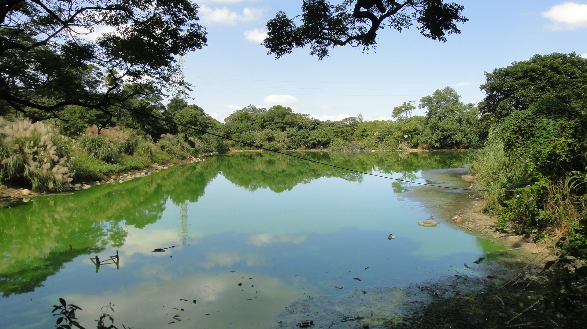

下厝埤位於桃園台地，是典型埤塘地景之一。 它屬於人工蓄水系統，而非天然湖泊。 因桃園缺乏大型河川，早期居民發展出埤塘系統來儲水與灌溉。
隨著時間演變，下厝埤從農業設施轉變為生態與景觀空間， 成為桃園重要的水文與地景資源。
桃園台地由沖積扇形成，地形平坦但排水不佳。 雨季集中、乾季缺水，使水資源極不穩定。
因此形成埤塘系統，將雨水儲存於低地， 再透過水圳分配使用。
下厝埤正是這種系統的重要節點之一。
水文循環包含降雨、滲透與蒸發。 下厝埤能調節水量與補充地下水。
同時水體具有降溫效果，使周圍環境更穩定。
水域、濕地與陸地形成完整生態系。 植物如蘆葦、水丁香提供棲息環境。
昆蟲、青蛙（澤蛙）、蜻蜓與鳥類共同形成食物鏈。
埤塘功能從農業 → 混合使用 → 都市下降 → 生態保育逐漸轉型。